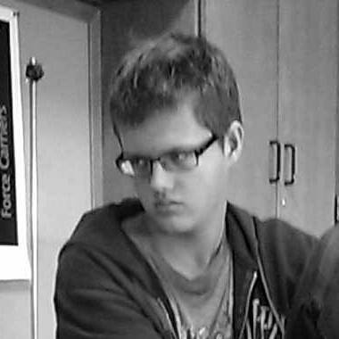

16 / m / chicago programmer / hobby web developer

Stuff I Do
I'm currently a senior at Northside College Prep, and co-captain of the software team on FRC Robotics Team 4787. In my free time I enjoy coding, playing piano/tetris, biking, (white hat) hacking, and reading, among other things.
Stuff I Know
I know Java, Python, C++, Javascript, HTML, CSS. I'm an intermediate programmer with many small projects, some of which you can find on my
github page.